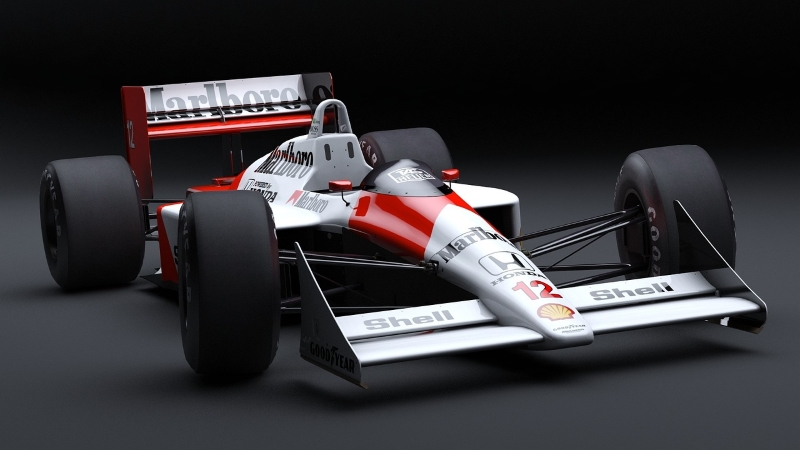

Ponad Stuletnia Historia
Z ponad 100-letnią historią, Indy 500 przechodził przez różne ery motorsportu, od klasycznych roadsterów po współczesne, zaawansowane technologicznie bolidy. Zawody te są hołdem dla odwagi kierowców i innowacyjności inżynieryjnej, przyciągającym setki tysięcy widzów na tor oraz miliony przed ekrany telewizorów.
Tradycja i Nowoczesność
Okrążenie słynnej owalnej trasy Indianapolis Motor Speedway, która liczy 2,5 mili, wymaga od kierowców niezwykłej precyzji i odwagi. Indy 500 to nie tylko test prędkości, ale również wytrzymałości, zarówno mechanicznej, jak i fizycznej dla kierowców, którzy muszą wytrzymać ekstremalne siły przeciążenia przez 500 mil.
Prędkość i Strategia
W Indy 500, strategia pit-stopów, zarządzanie paliwem i oponami oraz zdolność do adaptacji do zmieniających się warunków na torze są kluczowe dla zwycięstwa. Wyścig jest często nieprzewidywalny, z wieloma zaskakującymi zwrotami akcji, a finisz często rozgrywa się w ostatnich okrążeniach, co dodaje dramaturgii i emocji.
Kulturalne Święto
Indy 500 to więcej niż wyścig; to kulturowe święto. Znane jest z wielu tradycji, takich jak picie mleka przez zwycięzcę, wznoszące się balony w powietrze przed wyścigiem, czy śpiewanie "Back Home Again in Indiana" przed startem. To wydarzenie, które przyciąga nie tylko zagorzałych fanów wyścigów, ale także rodziny, które uczestniczą w corocznych obchodach tego sportowego święta. Indy 500 pozostaje jednym z najbardziej emocjonujących wyścigów w kalendarzu motorsportowym i jest absolutnym must-see dla każdego fana wyścigów.
